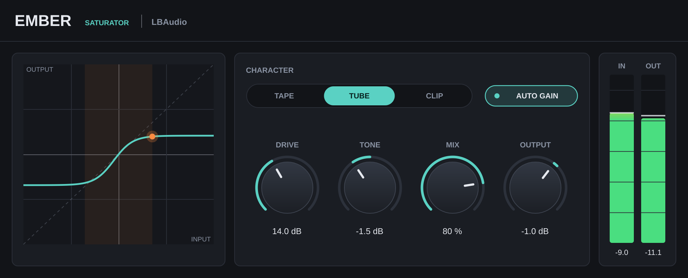

Saturation plugin · VST3 & AU
Emberby LBAudio
Tape, tube and clip saturation with the curve on screen, so you can see exactly how hard you're pushing.
Instant download. Any local VAT is worked out at checkout. Or get the core 5 in one bundle.
- VST3
- AU
- Windows
- macOS
- Linux
- 16x oversampling

Hear it on a real beat
A beat by LBAudio, run through Ember at three settings. Each version is matched to the original's loudness, so you hear the saturation, not a volume boost. Flip between them while it plays.
Gentle tape saturation rounds off the peaks and thickens the whole beat without sounding distorted.
Watch it work
Short videos with the real plugin on screen. Every before-and-after is matched in loudness, so you hear what Ember does, not a change in volume.
Three characters, one curve
Pick a character, turn up Drive, and watch your signal ride the curve as it bends.
Tape, tube or clip
Tape is smooth and rounded. Tube is asymmetric and adds even harmonics. Clip has a firm knee for edge and grit.
Auto gain
Keeps the level steady as you turn up Drive, so you judge the tone, not the extra volume.
16x oversampling
The curve runs at 16 times the sample rate, so even hard drive stays free of harsh aliasing.
The controls
Six controls. Drive sets how hard the signal hits the curve; everything else shapes what comes out. Double-click any knob to reset it, or click a value and type one in.
| Control | Range | What it does |
|---|---|---|
| Character | Tape / Tube / Clip | The shape of the saturation curve. Switching is smoothed, so you can change it while the track plays. |
| Drive | 0 to 36 dB | How hard the signal hits the curve. |
| Tone | ±6 dB | A tilt EQ around 1 kHz after the saturation: darker one way, brighter the other. |
| Mix | 0 to 100 % | Blends saturated and clean signal for parallel saturation. The clean path is delayed to stay perfectly in time. |
| Output | −24 to +12 dB | Level after everything else. |
| Auto gain | On / off | Holds the level roughly constant as you change Drive. |
Where to start
Four starting points. Set these, then adjust by ear.
-
Warm up a mix bus
Tape · drive 6–10 dB · mix 100 %
Rounds off peaks and glues the mix with a little extra density.
-
Make an 808 cut through
Tube · drive 15–20 dB
Adds harmonics above the fundamental, so the bass is heard on phone and laptop speakers.
-
Parallel drum crunch
Clip · drive 25–30 dB · mix 25–40 %
Aggressive edge blended under the clean hits, which keep their punch.
-
Softer synths
Tape · drive 10–14 dB · tone −2 dB
Takes the digital edge off bright synths and pads.
Specs
One download for each system. No iLok, no account and no activation.
- Formats
- VST3 on Windows, macOS and Linux. Audio Unit (AU) on macOS.
- Windows
- Windows 10 or later, 64-bit.
- macOS
- macOS 10.13 or later. Runs natively on Apple Silicon and Intel.
- Linux
- 64-bit x86 (x86-64).
- Hosts
- Any DAW that loads VST3 or AU plugins, such as Ableton Live, FL Studio, Cubase, Reaper, Studio One, Bitwig and Logic Pro. Not available for Pro Tools (AAX).
- Latency
- 67 samples (1.4 ms at 48 kHz), reported to your DAW so it compensates automatically.
- Oversampling
- 16x, with aliasing below −90 dB on a hard-driven 9 kHz tone.
- Characters
- Tape, Tube and Clip.
- Channels
- Mono or stereo.
Questions
Anything else? Email support@lbaudio.co.uk.
How do I install it?
Unzip the download and copy Ember.vst3 into your VST3 folder: C:\Program Files\Common Files\VST3 on Windows or ~/Library/Audio/Plug-Ins/VST3 on a Mac. Logic users also copy Ember.component into ~/Library/Audio/Plug-Ins/Components. Then rescan plugins in your DAW. The zip includes these steps in INSTALL.txt.
How many computers can I use it on?
All the computers you personally own or use. See the licence agreement for the details.
Can I use it on commercial releases?
Yes. The music you make with Ember is entirely yours, with no royalties or credits owed.
Do updates cost anything?
No. Updates to Ember version 1 are free for everyone who bought it.
What if it doesn't work on my system?
Get in touch within 14 days of buying. If we can't get it working, you get a full refund. See the refund policy.
Does it work in Pro Tools?
Not yet. Pro Tools only loads AAX plugins, and Ember is VST3 and AU.
Does 16x oversampling use a lot of CPU?
On our test machine one instance uses under 10% of one CPU core, so you can run plenty of them in a session.
Ember
VST3 & AU for Windows, macOS and Linux. Instant download. Or get the core 5 in one bundle.